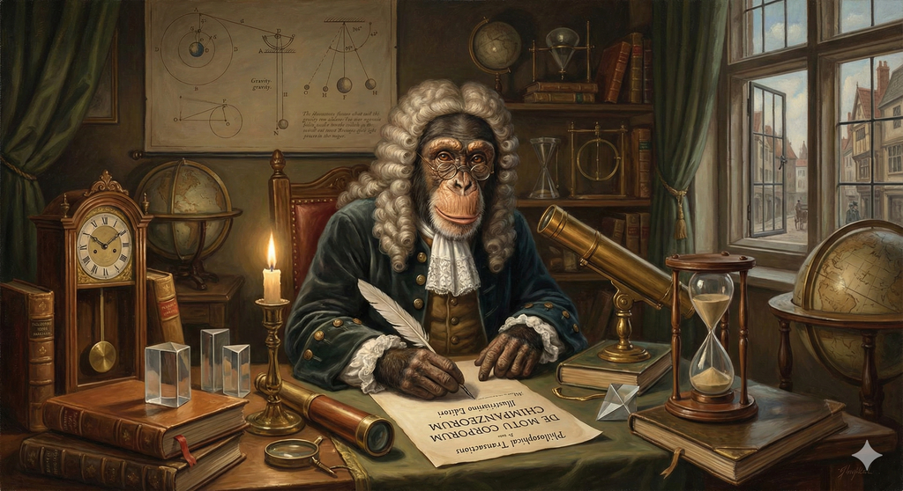

실전 논문 작성 가이드
인공지능과 로봇, 연구에서 출판까지

PART 1. 준비 단계 - 쓰기 전에 이기기 (Pre-writing Phase)
CHAPTER 1. 타겟 설정과 연구의 포지셔닝
CHAPTER 2. 도구 세팅과 워크플로우
PART 2. 집필 단계 - 논문의 해부학 (Anatomy of a Paper)
CHAPTER 3. 시각화 우선 전략 (Figures First)
CHAPTER 4. 본문 작성 1 - 방법론과 실험 (The Core)
- 4.1. 방법론 (Methodology)
- 4.2. 실험 설계 (Experimental Setup)
- 4.3. 결과 분석 (Results)
- 4.4. 실패 케이스(Failure Cases) 공개